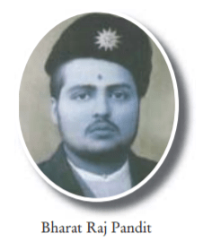

Biography:
Pandit Bharat Raj Pandey was the second Khajanchee of Nepal.
He was the brother of Khajanchee Pandit Janak Raj Pandey.
He was the Khajanchee(Governor) from Sept 18, 1948 to Jan 22, 1952
during the ruling period of King Tribhuwan. Notes were issued as a
MORU from Sadar Muluki Khana. Signature of Pandit Bharat Raj Pandey
can be seen on the currency notes of Moru 5, Moru 10 & Moru 100.